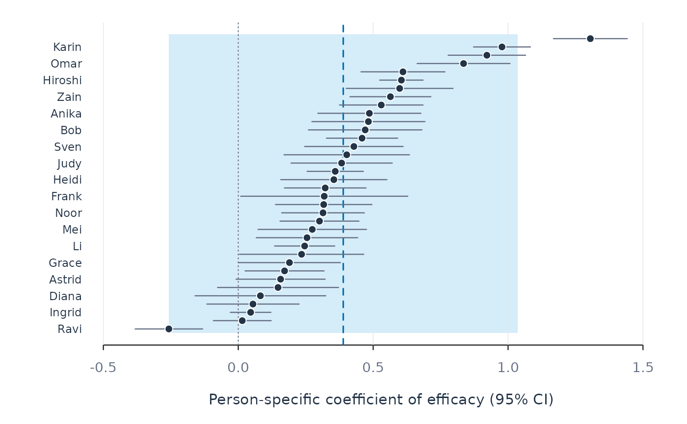

One row per person: the person-specific estimate of term with its 95%
confidence interval (estimate plus or minus 1.96 standard errors), sorted by
size. The vertical line marks the random-effects pooled estimate from
pool_coefs(), and the shaded band marks the range in which 95% of the true
person-specific coefficients are expected to fall (pooled estimate plus or
minus 1.96 tau). A wide band indicates that persons differ in the
coefficient beyond what sampling error explains.
Examples
fit <- fit_lm(srl, y = "effort", x = "efficacy", id = "name", time = "day",
scope = "individual")
plot_coefs(fit, term = "efficacy")
